RetroVega is a brand-new 16-bit DOS space-combat game, written in 2026 and set in Vega Strike's Terran–Aera war.
It runs on real DOS and stock DOSBox, in the browser, compiled natively, and with up to three pilots sharing one flight.
These notes cover the engineering that made it fit: assembly where the cycles go, XMS as a blitter, a graphics card that exists only in our emulator, a lightfield of pre-rendered ships, and a memory layout another program can puppet.
Every number comes from measuring the game. Figures marked LIVE are interactive: drag, slide, click.
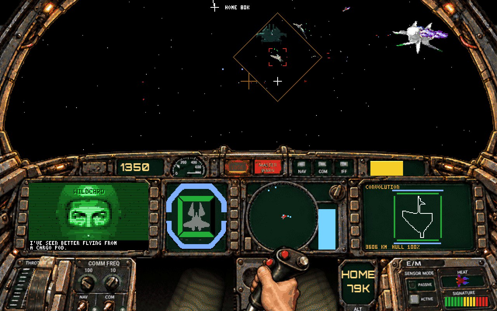
A recorded flight of Rigel 2: the Convolution targeted, Wildcard on the comm link.
01The machine we target
16-bit real mode, 386 instructions allowed. The C is Open Watcom 2 in the medium model (far code, near data, SS = DS); the hot loops are NASM.
640×400 in 256 colours (VESA mode 100h), drawn at 30 frames a second.
The flight's logic keeps the 1990 game's pace: the old game ran at 15 fps on an average machine of its day, so each of its frames is two of our steps.
Memory:
640 KB of conventional memory, of which DOSBox leaves a program 640,512 bytes.
Up to 62 MB of XMS (DOSBox's memsize=63, its most).
DOSBox's 128 KB of upper memory.
Time: in DOSBox an instruction costs about one emulated cycle, whatever it is. The browser page runs 50,000 cycles a millisecond, so a 30 fps frame is about 1.67 million instructions.
7,760 Bconventional memory left for DOS while the game runs
62 MBXMS for pictures, songs and sounds
1.67 Minstructions in a 30 fps frame in the page
901pre-rendered views per fighter (the 1990 game had 37)
0calls to malloc in the game's EXE
192 / 187play tests passing on the host / in DOS, hashes equal
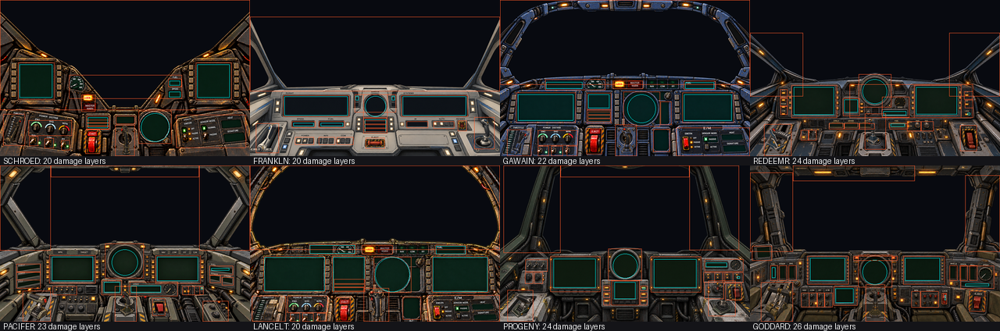
The eight cockpits, each a set of overlays the panel code drives.
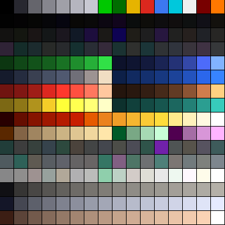
The flight palette: every ship, rock and flame is quantised to these 256.
02Counting instructions, not nanoseconds
DOSBox charges one cycle per instruction and one per rep iteration:
idiv costs what mov costs;
rep movsd moves 4 bytes a cycle and rep stosb fills one.
So the rule is fewer instructions, not cheaper instructions. That is the opposite of tuning for a real 386.
Open Watcom's 16-bit code calls a runtime helper (__I4M, __I4D, __U4M, __U4D: about 40 cycles) for every 32-bit multiply and divide, even (int32_t)a * b of two 16-bit values.
So 32-bit maths repeated over thousands of elements moved to NASM, using 32-bit registers in real mode.
Every flight logs where its frames went (flight: ms a frame: the plan; the picture (exact, sets); the whole frame), and the test build reads RDTSC, which in DOSBox counts emulated cycles.
● LIVESpend a framethe laser engine's measured cost model
Frame ≈ 9 + 7.8·exact + 0.6·far ships + 0.04·near bolts + 0.009·far bolts ms at 40,000 cycles (measured 2026-10-21); the page's 50,000 cycles take 0.8 of that.
The far ships' cost was mostly placing them in C, three times a frame (the cockpit view draws in three bands).
Where assembly (and better data) paidbefore → after
03Conventional memory: every byte has an address
The image is the budget. RV.EXE loads as 632,752 bytes; DOSBox gives a program 640,512. What is left (7,760 bytes today) is all DOS has while the game runs.
build.sh prints the headroom on every build, warns under 8 KB and refuses under 2 KB.
The game has no heap. Every buffer is a fixed array with a guard behind it and an address in RV.MAP, and the build refuses an RV.EXE that links _fmalloc:
MEM_ARRAY(LzBolt, g_b_arr, SHOTS_MAX) declares the array at file level;
MEM_TAKE clears it, sets the guard and enters it on the ledger;
MEM_GIVE hands it back.
The bug behind that rule: the far heap kept what a flight freed, so from a session's second flight the bolt pool found no room, and lasers still hit but were never drawn.
The ledger runs before and after each flight. It records:
the arrays out, DOS's free memory, the near heap, XMS and the open files;
a hash of the interrupt table, where a write through a null far pointer lands;
every array's guard.
The watch, once a frame: nothing takes conventional memory once the game runs (spawns and asteroid fields go to XMS), so any fall in DOS's free memory is logged as LEAK:. All 40 missions fly with none.
Every list has a cap its writer enforces, assembly included.
● LIVEThe first megabyte, and what RV.EXE does with ithover a block · click to zoom
From the link map (RV.MAP, 2026-11-08). Far data is the fixed arrays: the drawing scratch, the sprite tables, the rocks', the music's.
● LIVEThe tide lineconventional memory left for DOS, as build.sh printed it · hover the steps
Where the bytes came back from
Log formats left the program.tools/logfmt.py compiles the engine from copies with each log-only format string replaced by a token (\001N). The texts ride after the EXE's image behind an RVLOGEND trailer and are read into XMS at start.
A segment per function.-zm plus the linker's eliminate dropped the dead ones: 5,040 bytes.
Three programs from one source.
RV.EXE is the game.
RVT.EXE adds the demos, benchmarks and self-tests.
RVP.EXE adds the play tests and the assembly's C twins.
The game's own EXE got 56 KB smaller on disk and gained 48 KB in flight.
The title font lives in XMS, one glyph fetched per draw.
The stack is 4 KB, painted at start. Each flight's end logs the deepest use seen (1.7 KB).
Upper memory holds exactly two 64 KB buffers: the band buffer the screen is drawn in, and the dense slab the exact ship draw turns pictures from.
Rooms shared by users who never meet:
the chalkboard's hand and the flight's silhouettes;
the music's start-up reads, which borrow the empty scratch and font arrays.
DGROUP (64 KB of near data, shared with the stack) was full for weeks, so new tables go __far. The traps:
Watcom's __far binds to one declarator;
string literals always land in DGROUP in the medium model;
under ~200 bytes free, the C runtime cannot open files at all.
04XMS: the blitter DOS never had
The first plan was EMS 4.0. XMS won, because DOSBox carries out an XMS move (function 0Bh) as one host-side memory copy, video memory included.
Flipping a whole 64 KB bank of the screen costs a few emulated instructions. To the emulated CPU, copying is nearly free.
So the engine trades memory for speed everywhere: render it once, keep it in XMS, copy it.
The band buffer: the screen is drawn in runs of up to 100 dirty rows into one 64,000-byte buffer. Each run is drawn whole, back to front, then flipped by an XMS move, so nothing older is needed.
Rocks: each row of a big rock's picture is stored as runs, so a row lands in the band with one XMS move. That costs 1.1 µs at any width, against 1.9–2.2 µs for a CPU copy.
Five levels, a stack: resident, base, room, mission, hazard. They are allocated and freed in nesting order; a level out of order stops the game. At a mission's end every resource goes back to zero.
● LIVEA session in XMSsizes are approximate · press play or step
● LIVEThe band bufferthe cockpit view drawn as three runs of rows, each flipped by one XMS move
05A lightfield: 3D ships drawn from pictures
Nothing in flight is polygons. Every ship is a set of pictures rendered offline from Vega Strike's meshes (moderngl on Mesa EGL), one for each point of a lattice on a sphere around it.
Only headings 0–180° are stored. The other side is the same picture mirrored, drawn by a reversed row copy at no extra cost.
lf_place does the work:
in: the ship's position less the camera's, plus both bases (front, right, up);
out: the screen point, the view, the turn on screen (1,024 a circle) and the size.
Conventions fixed once: a left-handed frame like the screen (x right, y up, z into it), and full size at 2,500 km.
● LIVEFly the lightfieldthe Schroedinger's 145 real views · drag the ship to turn it
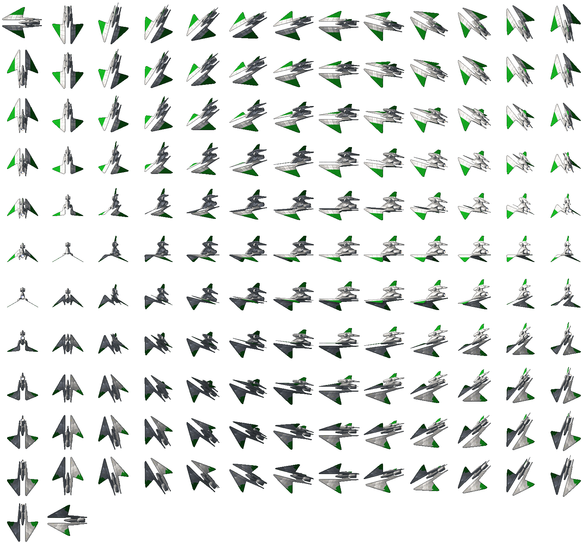
The map shows the camera's direction as seen from the ship: dots are stored views, rings are mirrored ones.
Watch the picture jump as the direction crosses into another view's cell. Those jumps are the "pops" the lattice density buys down.
The pops were studied frame by frame. The test scene's Gawain rolled at 68° a second about 35° off the line of sight, so it crossed a 15° cell every ~7 frames.
A blind test of 10° against 15° came back "almost as good… not worth optimizing". The fighters went to 6° later, once XMS allowed it.
Tried and dropped:
a polygon renderer ("not the style");
a dithered blend at cell crossings;
5° silhouettes over coarse paint.
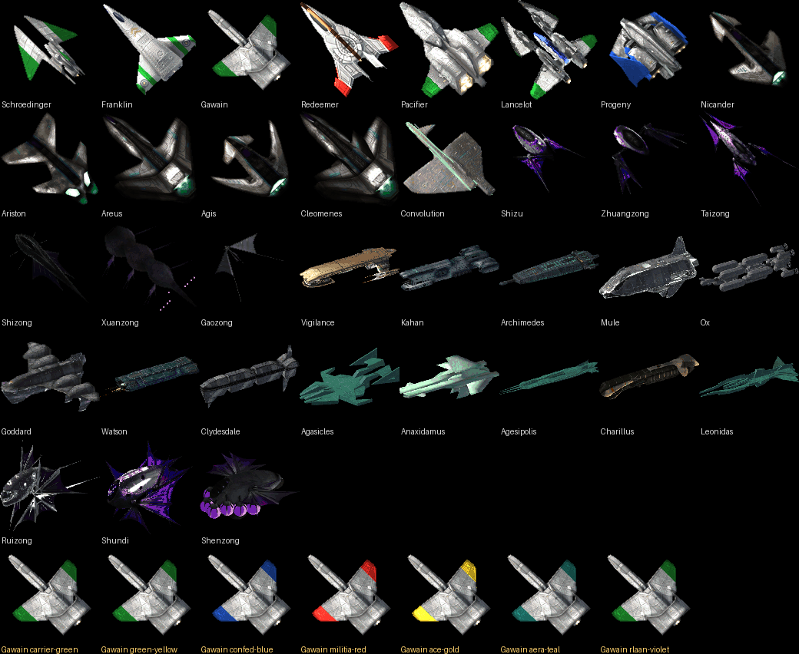
The packed views of every type, in the flight palette, as the engine stores them.
06Turning pictures: copy, scale, turn
The key problem: rotation and scale
The lightfield answers one question: which picture. Two more are left, and both are continuous:
roll: how the picture is turned on screen, any angle as the ship or the player banks;
scale: how big it is, any size as the distance changes.
A plain copy can do neither. The picture has to be resampled: for every pixel on screen, step back through the turn and the scale to the source pixel that lands there (inverse mapping).
That costs per pixel, and pixels grow with the square of nearness. A ship at half the distance has four times the pixels, and the nearest ships matter most to the player.
The answers, in the order they were tried:
pre-render the sizes and turns and copy them (fast, but steps show up close, and megabytes per type);
turn the one or two nearest exactly;
turn every ship exactly at 2×2 blocks, a quarter of the samples, with half the rows copied;
hand rotation and scale to the card: every pixel, any angle, any size, no emulated time (section 7).
● LIVEWhat one turned ship coststhe Schroedinger, as it comes nearer · hover
A model from the measured kernels: about 16 cycles a pixel turned, 4.6 at 2×2 blocks with half the rows copied, 1.7 copied unturned, and about 60 instructions to ask the card. The pixel count is the real view's, scaled. The page has 1.67 million cycles a frame.
A copy is run-length spans moved with rep movsd: 1.7 cycles a pixel. Scaling or turning one by inverse mapping costs nine times that, even in assembly.
So a picture drawn often must be a copy, and sizes and turns are rendered once:
The design: the views are the compressed form of a ship.
A decompressor renders 13 sizes (each 0.84 of the last), and turns in 11.25° steps from half size down, into sets the engine copies straight into XMS.
The mirror insight:
an upside-down copy is a turn of 180°−θ plus a mirrored heading;
a mirrored copy is a turn of −θ;
so only 0–90° of turn is stored: 5 of 16 steps.
The decompressor runs on the host, not in the emulator:
tools/rvsprites.c makes a set in 40 ms;
web/rvsprites.js does it in the page, in a Web Worker;
a check compares every set the two make: byte-identical.
The block mode (since 2026-10-23):
every ship is turned exactly each frame at 2×2-pixel blocks, capital ships at 4×4;
each turn starts from a dense copy kept in the upper-memory slab;
an eight-entry XMS cache keeps more than two turned ships from re-expanding every frame.
Dropped rows get exact edges: a ship is convex enough that one left and right edge a row hides the blocks' stair steps.
Cycles a pixel, by paththe Nicander's 82×121 view at 40,000 cycles
072dfx-Voonew: a graphics card that exists only in our emulator
2dfx-Voonew (invented 2026-11-01) is an optional "accelerator" that draws a ship turned and scaled at full resolution, from pictures it fetches by itself. Its interrupt interface is called RVGX.
It takes over exactly the two jobs DOS can least afford, rotation and scaling. The game says how much (roll, scale, mirror) and where (x, y, frame buffer, stride, clip rows and columns). The card does the inverse mapping for every pixel, in host code.
It must be harmless where it does not exist, on real DOS and stock DOSBox ("spoiler: this hardware is not installed except in DOSBox"):
It lives on INT 2Fh, DOS's multiplex interrupt, where every DOS since 3.0 returns an unclaimed function with AL as it was: 0.
The handshake: AX=E700h, BX='RV', CX='GX' → AL=FFh, BX='gx', and CH.CL is the version. Anything else means no card.
The interface is one 128-byte block at a fixed address, told to the card once. A draw is: fill the block, int 2Fh.
The result word is set to −100 before the call, so a card that did nothing counts as a failure. Any negative result means the game draws its own blocks that frame.
Slots, not buffers: 256 slots, each named from a loop with the name on the stack, and slot = ship type number. DOS keeps no list and no pixel of it; the bitmaps live in the browser.
The point is memory more than speed. A mission's full-size views are tens of megabytes, and capital ships are drawn at full resolution "no matter what".
A draw takes no emulated time. The card writes straight into emulated memory with the game's own lightfield.c code, so a ship lands where the native build puts it: the same box in 142 of 142 compared frames.
In wasm it draws about 480 million pixels a second, some 1,600 full-size fighters in a 33 ms frame.
The ` key flips card and blocks at any moment, "like StarCraft Remastered".
● LIVECard on, card offreal screenshots, three frames apart · drag the line
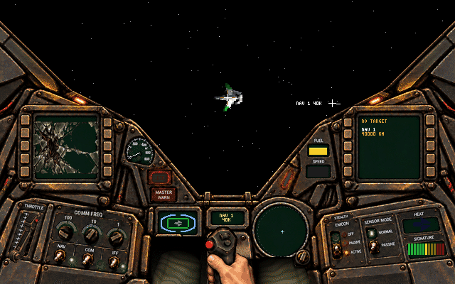
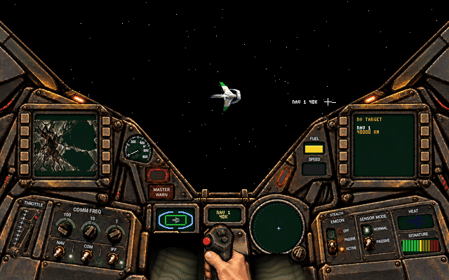
⇔
2DFX-VOONEWDOS ALONE · 2×2 BLOCKS
card
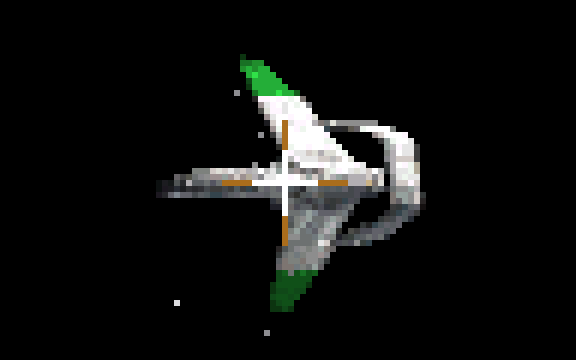
Six times enlarged: the same ship as the card draws it and as the game's own block mode does. tests/gxzoom.txt in the test build.
Who draws the rows
Without the card, DOS turns and scales every ship itself. It starts from a dense copy of a half-size picture, kept in upper memory or fetched back from an XMS cache. Then:
every other row is drawn: the NASM kernel takes one sample per 2×1 block, by inverse mapping;
each row between is copied from the row above with rep movsd;
the copied row's own left and right edges are probed and sampled, so the outline stays exact: a ship is convex enough for one edge a side.
With the card, DOS does none of that. The game fills the block and makes one int 2Fh (AX=E720h). The block holds:
which picture: slot, view, mirror;
where and how: x, y, scale, roll;
the frame buffer's row pointer and stride;
the rows and columns it may write.
The card draws every pixel at full resolution, straight into the band buffer, outside the emulated CPU.
The fallback is the same frame. A negative result (no picture yet, none to be had, memory it can't write) sends the draw down the DOS path at once. Nothing waits, and no ship is ever missing.
● LIVEOne ship, row by rowa real Schroedinger view · pick who draws it
moving either shows the finished picture; replay to watch it drawn
block field
value
drawn row: one sample a 2×1 blockcopied from the row above (rep movsd)edge pixels sampled on a copied row
/* ships.c, ships_draw_exact(): the card first, the game's own blocks if it says no */
if (s->factor > 1 && gx_on()) {
int mir, src = stored_view(s, p.view, &mir);
if (gx_draw(s->type, src, mir, p.sx, p.sy, scale256, p.roll,
y0, y1, xa, xb, ext, ext_y0, ext_rows) >= 0)
return 1; /* drawn by the card: every pixel */
}
/* result < 0: the same frame, DOS turns it: dense copy, drawn rows, copied rows */
draw_turned_at(s, set_i, k, p.view, p.sx, p.sy, scale, p.roll, 4 /* 2x2 */, y0, y1, xa, xb, ext, ...);
The instruction counts are a model built from the measured kernels (about 18 a sample, a quarter a byte copied). The card's draw takes no emulated time at all.
The values in the block are this picture's: scale 159 is 0.62 of the stored size, and roll 80 is 28° of a 1,024-step turn.
● LIVEOne ship through the cardanimated · the picture arrives while the game flies on
● LIVEThe 128-byte blockhover a byte
The second half (bytes 64–127) carries a wreck's debris cloud: function E730h, cut from the art's damage stamps. It is card-only: DOS-only players never see it, and it is off by default (EXTRA FX).
08Bolts, flames, fire: the hot loops
Laser bolts
Bolts are capsules: square backs were a nonstarter, the ends must be round.
A just-fired bolt is up to 16 px wide. Under 0.75 px of radius it becomes a line, about three times cheaper.
lasers.asm places, sets up and draws them row by row, bit-exact with lasers.c. A near bolt's set-up took 87 µs in C (Watcom's 64-bit helpers) and takes 13.8 µs in assembly.
A square-root table shared with the AI (1,025 bytes) made capsules the cheapest shape, once counted as shared.
On the frame it is fired, a bolt is drawn as a streak from the gun. It starts above your head, not halfway to the crosshair.
About 1,100 far bolts fit in a 30 fps frame in the page.
● LIVERasterising a capsuledrag either end · the bolt flies off by itself until you touch it
Engine flames
3,114 noisy flame sprites are baked once at game start: 1.36 MB of XMS, 1.9 s at 40,000 cycles.
Each frame mixes two baked frames row by row, so the flame flickers without a shader. That costs 0.5–0.9 ms a frame.
They sit on the nozzles of the picture as drawn (the same view, turn and size as the sprite). The worst error is 0.512 px, checked by /flametest. Flames that looked "bent left or right" were a bug worth chasing: a flame is a key clue to a ship's heading.
● LIVETwo baked frames, mixed by rows
Fireballs
The report: "RetroVega really stutters when there's an explosion on screen."
The cause was the fireball's per-pixel scaling: 680K cycles for one fighter's blast at 500 km, 900K with its tables and sparks.
Now a big fireball is drawn as runs (rep stosb), and a row that repeats the one above is copied with movsd. That brought it to 180K cycles, and the whole picture from 27 ms to 17 ms.
● LIVEPer pixel, or runsa 16×16 cel scaled up · instruction counts are a model
Rules for the assembly
Every assembly routine has a C twin (src/twins.c):
RVP.EXE /twins and a host test must agree on every case;
each flight starts with a self-test (lightfield: asm kernels agree with the C ones);
the native build runs the twins.
Traps met on the way:
an assembly local below SP gets clobbered by the 240 Hz timer interrupt;
[bp+bx] is not an addressing mode;
idiv traps where C wraps, so a 64/32 divide is done in two steps;
once, -ox miscompiled an if/else: read wdis when C does the impossible.
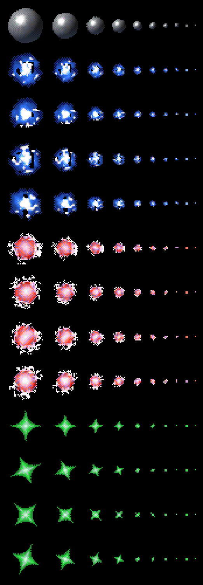
The "balls" (plasma, fire, star, discharge) at every diameter from 1 to 32 px: small ones copied, big ones fetched from XMS.
09Asteroid fields: the old game's rules, measured
Rocks are not ship slots. Each machine makes its own, as the 1990 game did, so a field costs no network traffic.
The rules were measured in the 1990 game, in the same emulator:
rocks come only from a cone ahead, about 3,050 km out;
most drift across your path at 100–160 kps;
1 in 9 is aimed at where you will be;
mines turn toward you every 20 of the old game's frames.
The pictures:
raymarched signed-distance solids (scoria, slag, lava, pumice) with Worley pits and metal glints;
32 tumble frames and a 40-size ladder, stored as rows of runs for XMS moves.
Three times the rocks cost nothing measurable: 17.6 against 17.5 ms a frame with five fighters about.
● LIVEThe field, from abovethe spawn cone, drifters, and the aimed one in nine
drifteraimed at the lead pointyour fighterspawn cone, 3,050 km
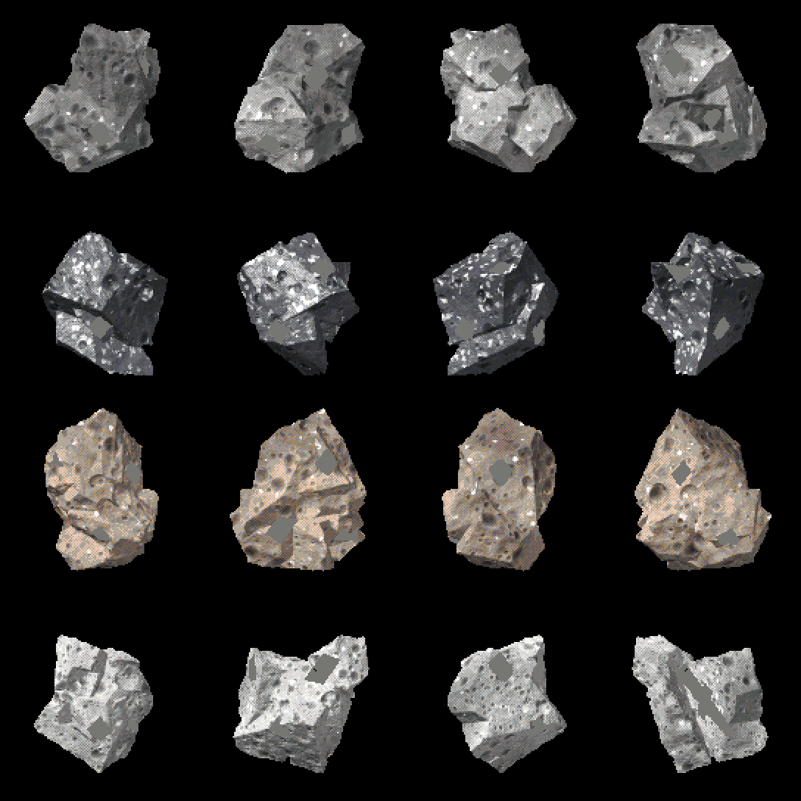
Four materials, rendered by raymarching.
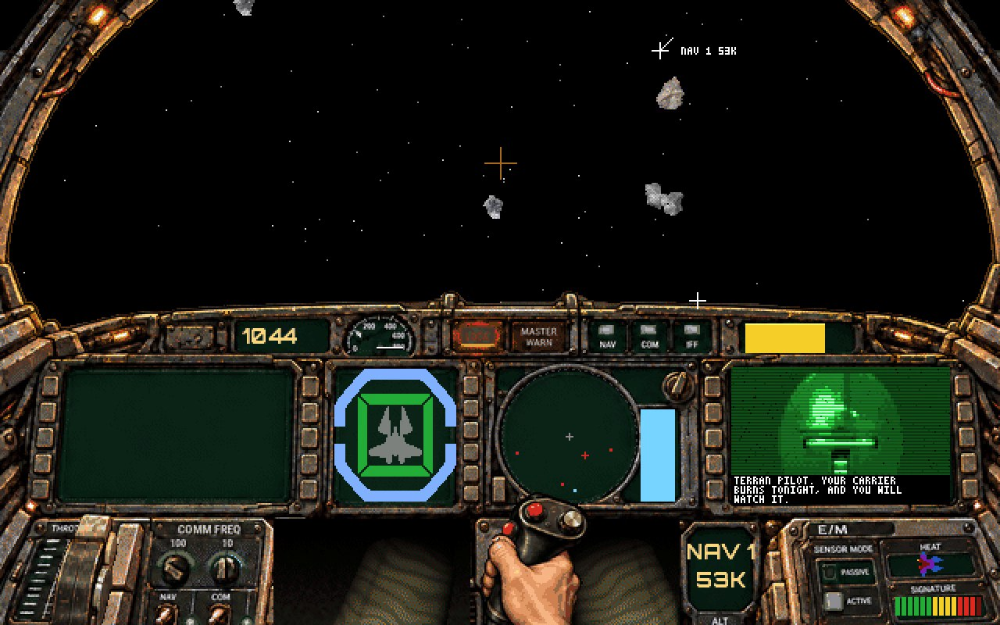
In flight: the field ahead, an Aera taunt on the right screen.
10Multiplayer: a game built to be puppeted
The two-player layer was first written for the 1990 game. From inside DOSBox it reads and writes the game's memory and hooks its functions.
RetroVega was designed from its first day to be hooked the same way: the same names, units, strides and enums, fixed for good in one file, abi/rvabi.def.
tools/rvabi.py generates three things from that file, and a stale emulator header fails the game's build:
the game's header (rvhooks.h);
its hook assembly (rvhook.asm);
the emulator's map (wcnet_rv.h).
At load, the layer checks RVHOOK's magic, version and counts, and every word of the game's puppet directory. On any difference it only watches, and the page says the game and the emulator do not match.
Thunks: every hookable function is called through a jmp far at RVHOOK:0x20 + 5n, so a hook sees every call. Sites: instructions of a hand-written flight loop at fixed offsets (mainLoopTop at 0x0400…).
The layer needs two things from the program's layout:
SS = DS, because it reads a far call's arguments at DS:SP+4 (Watcom's medium model gives that);
two scratch strings in DGROUP that it overwrites with code and runs with CS = DS. They still carry the old game's string names.
● LIVEThe fixed block: DS:0000–73FFpick a slot · click a field
field (per slot)
bytes
array at
this slot at
A struct of arrays, as the old game laid out its ships: 128 slots, each field its own array. gPositionVector[5] lives at 0x0B00 + 5×12 = 0x0B3C on every machine, so the layer reads and writes it by address.
Who flies a ship is a byte per slot.rvController is 0 AI, 1 this machine's pilot, 2 puppet, 3 script or 4 frozen, and the flag RV_FLAG_HUMAN marks a ship a human flies elsewhere. The game's logic never asks whether it is host or guest.
The meeting point is missionStarting: the host's compiled mission tables are written into the guest's fixed block, so both fly the same numbering.
Freewheel, then lockstep: the first mission never waits. After a mission flown together, the pilots meet at the briefing door.
Asteroids are each machine's own, and taunts cross through a byte per slot (rvTaunt). Up to three pilots fly together.
● LIVETwo machines, one flightslot 0 is always this machine's own pilot
PLAYER (this machine's pilot)AI (runs only on the host)PUPPET (moved by the layer)RV_FLAG_HUMAN
11The browser: making an emulator fast enough
The emulator in the page ran three times slower than native. Asyncify had instrumented the whole CPU core, because a hook called from inside it could wait on the network.
The fix: hooks return a callback number, and the main loop runs it outside the core. The core left Asyncify and the page got 70% faster.
RetroVega idles politely with sti; hlt in the rooms and in the 30 fps wait, so the host CPU rests and the page reports its true load.
Ship pictures are fetched per flight, through a file:
the game writes RVWANT.TXT at the briefing;
the page polls it every 300 ms, fetches what it names and makes the set in a Web Worker;
the page writes the result into DOSBox's disk, which opens a file created after mounting by its name.
The browser's Cache API keeps the downloads by SHA-1 and the made sets by SHA-1 plus recipe.
● LIVEA flight asks for its ships
12One source, many machines
What src/ becomes
/rv is the game compiled for the browser, not an emulator. host/hle.c answers its DOS, BIOS, XMS, mouse and port calls, so src/ builds nearly unchanged.
A far pointer there is the host pointer split into 16-bit halves, which is why that build is 32-bit.
The trap:int is 16 bits on DOS and 32 on the host.
A width audit rewrites the game with 16-bit int under clang's truncation check.
That found the flame seed and a rocks pointer; the fix put the near data on a 64 KB boundary.
Screenshots from DOSBox and from the native build of the same walk are compared pixel for pixel.
The desktop core runs under a seccomp allowlist of 11 system calls and in a bubblewrap sandbox: no network, data read-only. Its build is reproducible, byte for byte.
Licences: in-game code is BSD (the OPL3 is ymfm); tools that never ship may be GPL.
13Testing a game that must be the same everywhere
● LIVEOne test, two machines, one hash
Play tests: one C89 file, built for the host and into RVP.EXE. Each test ends with a hash of the world, --dos compares the two, and --steps finds the first step where DOS parts from the host. Today: 192 on the host, 187 in DOS.
A 16-bit wrap was caught only by the hash compare: both builds "passed" until their worlds were compared.
The quiet log: a normal frame logs nothing, so a line means something. Notes print only with /verbose.
The freeze watch: if the main loop is silent for 20 s, the music's interrupt writes the registers, the stack and the last second's interrupted addresses. freezemap.py names them from RV.MAP.
The monkey: random clicks and keys under AddressSanitizer on a virtual clock, a campaign in seconds, across the 68 routes through the campaign.
The test pilot: a bot flies the native game by keys for win-rate sweeps. At 9° of aim wander it won Rigel 2 about one time in three.
The 1990 game as the reference: rigs fly the original in the same emulator to measure speeds, turn rates, hit rates and timers. The campaign's tree and points rule were decoded from its data.
The gate: every change ships through one script that runs all of it (host, DOS, hashes, twins, quiet, two smokes) and then deploys.
14Odds and ends
Music:
our own MIDI sequencer on the OPL3 with our own CC0 instrument bank;
songs stream from XMS through two rings;
an exact integer tempo map, because Watcom's 64-bit division was too slow for 96K events;
loop markers, so battle songs chain on the bar line.
Comm faces: helmets raymarched as signed-distance models at 56×40, each row drawn twice for the "low-bandwidth encrypted link". The pilots' eyes come from their portraits.
The sky: 128 pre-rendered turns per nebula, galaxy or planet. A half turn is free (flip both ways), so 64 are kept, or 33 for a mirror-symmetric thing. Nebulae are interlaced.
Sound: every effect is a recipe in tools/sfx.py, rendered to SFX.DAT, so a sound is tuned by editing numbers.
Data: the campaign, missions, ships and lines are text files (missions.txt, ships.csv) packed into RVGAME.DAT with versioned records.
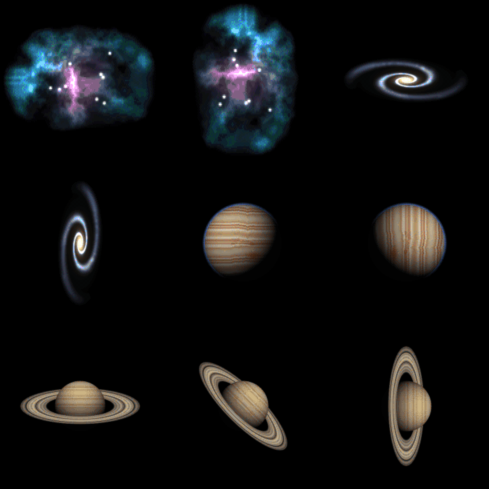
The sky's far things: drawn at three times size, turned, box-filtered and dithered to the palette.